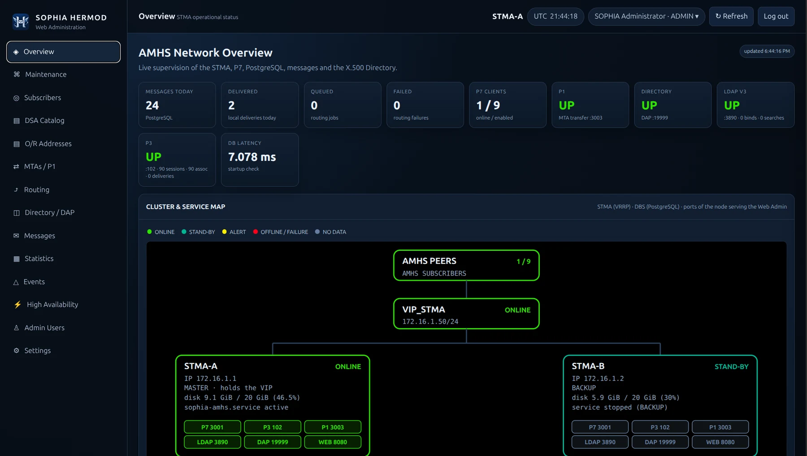
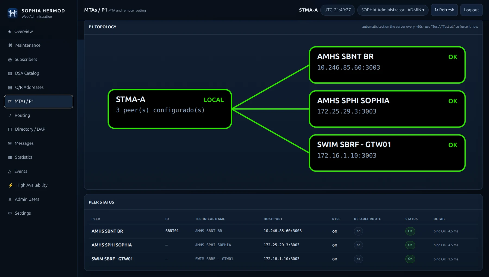
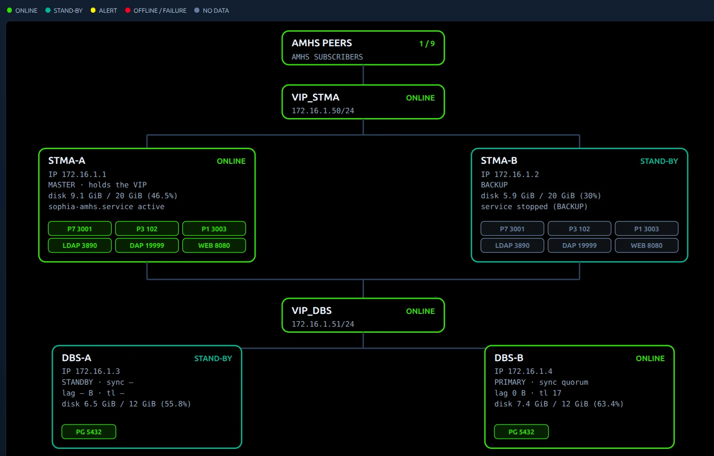
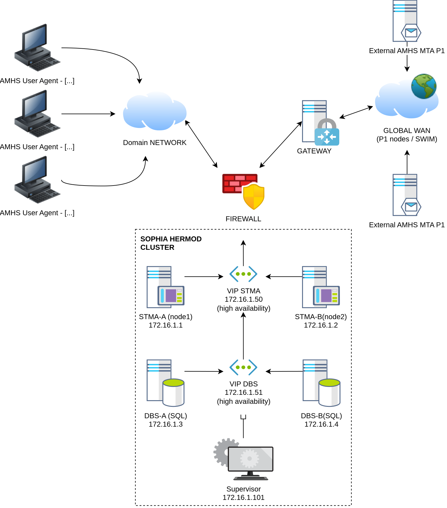
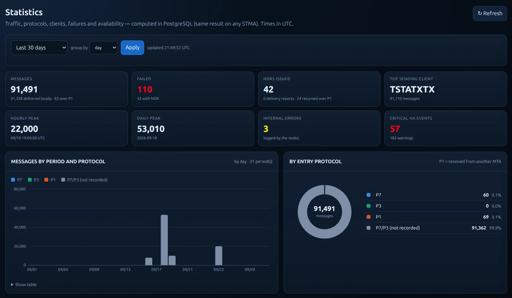
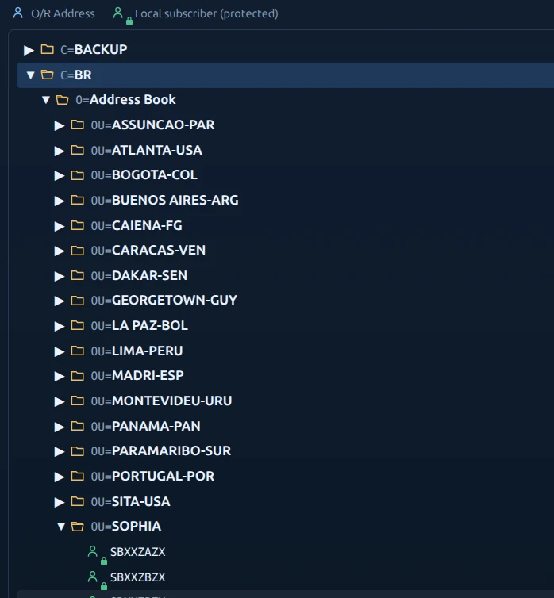

MTA e roteamento
Peers P1, rotas por O/R Address, prioridade de rotas e encaminhamento para destinos locais ou remotos.
ATSMHS · X.400 · X.500
High-reliability Exchange, Routing and Messaging Operational Daemon
Mensagens Aeronáuticas, em uma plataforma única.
HERMOD é o ATS Message Server da suíte SOPHIA. Reúne MTA, Message Store, diretório e supervisão operacional em uma arquitetura Linux voltada à continuidade de serviço e à integração com ambientes AMHS.

Core ATSMHS
Uma base única para transferência, acesso, armazenamento, endereçamento e administração de mensagens aeronáuticas — com configuração centralizada e visão operacional do ambiente.
Peers P1, rotas por O/R Address, prioridade de rotas e encaminhamento para destinos locais ou remotos.
Serviços de acesso ao MTS e ao Message Store para integração com terminais e aplicações AMHS.
Catálogo hierárquico de endereços O/R, acesso DAP e interface LDAP complementar para integração e administração.
Estado dos serviços, estatísticas, eventos, filas, assinantes e infraestrutura reunidos em uma mesma interface.
O núcleo ATSMHS do HERMOD é desenvolvido e mantido pela SOPHIA ATC, com controle direto sobre protocolos, roteamento e serviços de mensagens. Sem dependência de middleware X.400 proprietário, assinaturas recorrentes ou componentes comerciais de terceiros no núcleo de mensagens.

Unified Management
O WebAdmin apresenta os elementos que importam para a operação técnica: conexões, peers, assinantes, diretório, roteamento, mensagens, estatísticas, eventos e alta disponibilidade.
Deployment
A arquitetura pode ser dimensionada conforme a necessidade do órgão, preservando a mesma camada de aplicação e administração.

Reference topology
Sim — aqui o diagrama funciona bem. Ele reforça a visão de implantação do HERMOD com mais clareza visual, sem deixar a página excessivamente técnica. Mantivemos o SVG com fundo transparente, acomodado sobre um card escuro para preservar contraste e acabamento visual.

Standards alignment
O HERMOD é desenvolvido tendo como referência os perfis e especificações aplicáveis ao ATS Message Handling Service.
Referência técnica para ATSMHS e serviços de diretório no ambiente ATN/OSI.
Referências europeias para perfis e interconexão de sistemas AMHS.
X.411, X.413 e X.419 para transferência, armazenamento e acesso à mensagens.
Transporte OSI sobre TCP/IP e estrutura de diretório para integração com infraestruturas aeronáuticas.
As referências normativas descrevem a base de engenharia observada no desenvolvimento e não constituem declaração de certificação externa.
Operational view
Uma interface técnica sóbria, voltada a leitura rápida do estado do sistema e administração dos principais objetos do AMHS.


HERMOD combina mensagens, roteamento, diretório e supervisão em uma plataforma única, com opções de implantação que atendem desde ambientes compactos até arquiteturas redundantes.